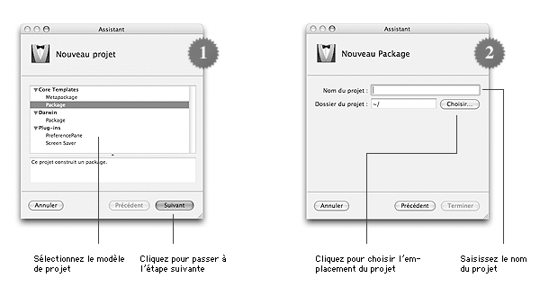
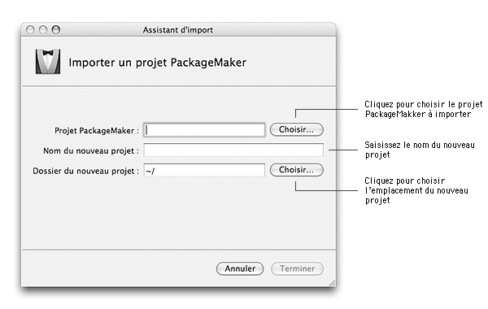

Lorsque vous souhaitez créer un installateur pour Mac OS X, la première étape consiste à créer un projet. Ce projet vous permettra de définir les fichiers à installer et à quels emplacement ceux-ci doivent l'être.
Il existe deux familles de projets qui sont identiques aux deux types de composants que le Programme d'installation reconnaît :
Un projet d'installateur peut être créé de deux manières : soit en construisant le projet à partir d'un modèle de projet, soit en important un projet d'installateur initialement conçu avec PackageMaker.
Création à partir d'un modèle de projetIceberg est livré avec une série de modèles de projet dans laquelle vous pouvez piochez celui qui correspond le mieux à l'installateur que vous souhaitez concevoir.
Vous pouvez si vous le souhaitez définir vos propres modèles de projet en vous basant sur le document Modèles de projet.

Pour créer un projet de package à l'aide d'un modèle de projet :
| 1 | Choisissez Fichier > Nouveau Projet…. | ||
| 2 | Sélectionnez Package dans la catégorie Core Templates.
| ||
| 3 | Cliquez sur le bouton Suivant. | ||
| 4 | Saisissez le nom du projet dans le champ Nom du projet. | ||
| 5 | Cliquez sur le bouton Choisir…. | ||
| 6 | Sélectionnez l'emplacement où le dossier du projet doit être créé et cliquez sur le bouton Choisir. | ||
| 7 | Cliquez sur le bouton Terminer. |
Pour créer un projet de metapackage à l'aide d'un modèle de projet :
| 1 | Choisissez Fichier > Nouveau Projet…. |
| 2 | Sélectionnez Metapackage dans la catégorie Core Templates. |
| 3 | Cliquez sur le bouton Suivant. |
| 4 | Saisissez le nom du projet dans le champ Nom du projet. |
| 5 | Cliquez sur le bouton Choisir…. |
| 6 | Sélectionnez l'emplacement où le dossier du projet doit être créé et cliquez sur le bouton Choisir. |
| 7 | Cliquez sur le bouton Terminer<./TD> |
Si vous souhaitez basculer la gestion d'un projet d'installateur de PackageMaker à Iceberg, il vous suffit de créer un nouveau projet en important l'actuel projet PackageMaker.
Si vous importez un projet de package, la hiérarchie des fichiers sera construite à partir du dossier root que vous avez défini dans PackageMaker.
Si vous importez un projet de metapackage, seul le metapackage sera importé dans le nouveau projet, ses composants devront être importés manuellement. Pour ajouter un composant depuis un projet PackageMaker, reportez-vous au document Gestion des composants.
Iceberg peut actuellement importer tous les formats de projet PackageMaker à l'exception des projets Distribution Script.

Pour importer un projet conçu avec PackageMaker :
| 1 | Choisissez Fichier > Importer Projet…. |
| 2 | Cliquez sur le bouton Choisir… à droite du champ Projet PackageMaker. |
| 3 | Sélectionnez le projet PackageMaker que vous souhaitez importer et cliquez sur le bouton Choisir. |
| 4 | Saisissez le nom du projet dans le champ Nom du nouveau projet. |
| 5 | Cliquez sur le bouton Choisir… à droite du champ Dossier du nouveau projet. |
| 6 | Sélectionnez l'emplacement où le dossier du nouveau projet doit être créé et cliquez sur le bouton Choisir. |
| 7 | Cliquez sur le bouton Terminer. |